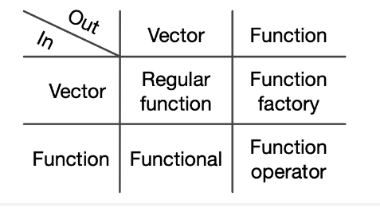
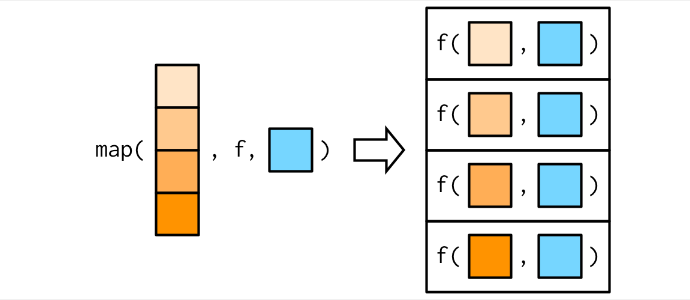
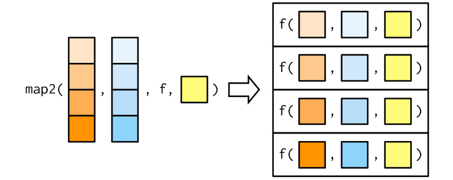
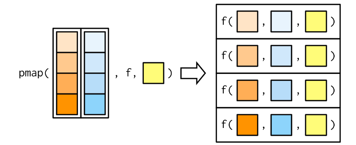
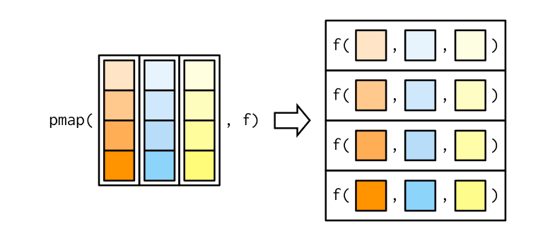
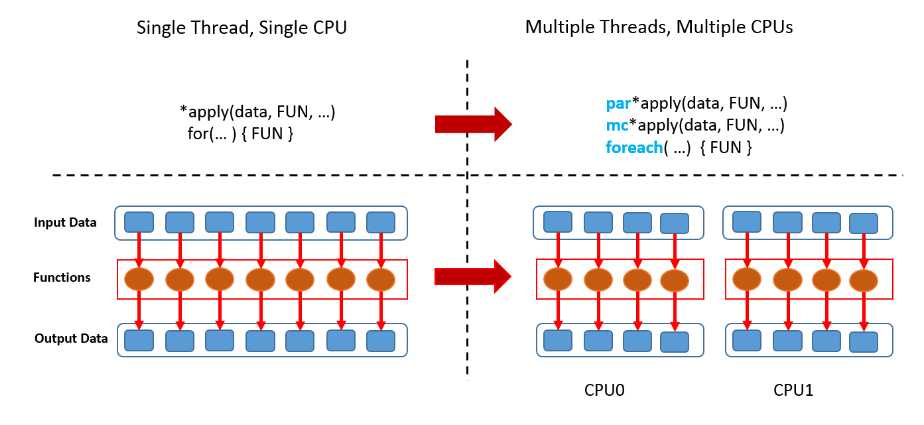

rf <- function(f,...) f(rnorm(100,...))
rf(mean)[1] -0.05125695rf(sum)[1] -6.740617Entende-se como paradigma uma forma de fazer algo. Ou seja, paradigma de programação é o nome que se dá a maneira como se programa,
São conjuntos de regras que guiam os desenvolvedores. Cada linguagem de programação é criada com base nessas regras.
São como limites nas formas como as linguagens são usadas, orientando um estilo particular de programação.
Define a metodologia e os princípios que guiam a escrita de código
Toda linguagem de programação possui funções, então o que torna uma linguagem de programação funcional?
Existem muitas definições sobre o que exatamente torna uma linguagem funcional, mas existem dois (entre outros) pontos comuns:
As linguagens funcionais possuem funções de primeira classe.
Em linguagens funcionais exigem que as funções sejam puras
A saída depende apenas das entradas, ou seja, se você chamar novamente com as mesmas entradas, obterá as mesmas saídas.
A função não tem efeitos colaterais, como alterar o valor de uma variável global.
Estritamente falando, R não é uma linguagem de programação funcional porque não exige que você escreva funções puras. No entanto, você certamente pode adotar um estilo funcional em partes do seu código.
Aqui, podemos definir estilo funcional como:
Ao usar um estilo funcional, você se esforça para decompor os componentes do problema em funções isoladas que operam de forma independente.
Cada função isoladamente é simples e direta de entender; a complexidade é tratada compondo funções de várias maneiras.
Existem três principais técnicas funcionais que ajudam a decompor problemas em partes menores:
Funções que recebem outras funções como argumentos. Usar funções para fazer loops. Funções functionals (funcionais)
Funções que criam funções. Funções factories
Funções que recebem funções como entrada e produzem funções como saída. Normalmente modificam o funcionamento de uma função. Funções operators
Esses tipos de funções são chamados de higher-order functions (funções de ordem superior )

rf <- function(f,...) f(rnorm(100,...))
rf(mean)[1] -0.05125695rf(sum)[1] -6.740617Funcional matemático como integrate()ou optim().
Um uso comum de funcionais é como alternativa aos loops for.
purrrO funcional mais fundamental é purrr::map() . Ele pega um vetor e uma função, chama a função uma vez para cada elemento do vetor e retorna os resultados em uma lista.
Em outras palavras, map(1:3, f) é equivalente a list(f(1), f(2), f(3)).
x = NULL
y = 1:3
for(i in 1:length(y)){
x[i] <- 2*y[i]
}
x[1] 2 4 6f = function(x){2*x}
purrr::map(y,f)[[1]]
[1] 2
[[2]]
[1] 4
[[3]]
[1] 6purr::map()é lapply().f = function(x){2*x}
lapply(y,f)[[1]]
[1] 2
[[2]]
[1] 4
[[3]]
[1] 6map()retorna uma lista, o que a torna a mais geral da família de mapas.
Mas é inconveniente retornar uma lista quando uma estrutura de dados mais simples serviria, então existem mais quatro variantes específicas: map_lgl(), map_int(), map_dbl(), e map_chr()
require(purrr)
head(mtcars) mpg cyl disp hp drat wt qsec vs am gear carb
Mazda RX4 21.0 6 160 110 3.90 2.620 16.46 0 1 4 4
Mazda RX4 Wag 21.0 6 160 110 3.90 2.875 17.02 0 1 4 4
Datsun 710 22.8 4 108 93 3.85 2.320 18.61 1 1 4 1
Hornet 4 Drive 21.4 6 258 110 3.08 3.215 19.44 1 0 3 1
Hornet Sportabout 18.7 8 360 175 3.15 3.440 17.02 0 0 3 2
Valiant 18.1 6 225 105 2.76 3.460 20.22 1 0 3 1map_chr(mtcars, typeof) # character mpg cyl disp hp drat wt qsec vs
"double" "double" "double" "double" "double" "double" "double" "double"
am gear carb
"double" "double" "double" map_lgl(mtcars, is.double) # lógical mpg cyl disp hp drat wt qsec vs am gear carb
TRUE TRUE TRUE TRUE TRUE TRUE TRUE TRUE TRUE TRUE TRUE map_int(mtcars, ~length(unique(x))) # inteiro mpg cyl disp hp drat wt qsec vs am gear carb
3 3 3 3 3 3 3 3 3 3 3 #map_int(mtcars, function(x) length(unique(x))) # inteiro
map_dbl(mtcars, mean) # double mpg cyl disp hp drat wt qsec
20.090625 6.187500 230.721875 146.687500 3.596563 3.217250 17.848750
vs am gear carb
0.437500 0.406250 3.687500 2.812500 
Todas as funções de map sempre retornam um vetor de saída do mesmo comprimento que a entrada, o que implica que cada chamada .f deve retornar um único valor.
As funções do map também possuem atalhos para extrair elementos de um vetor
Você pode usar um vetor de caracteres para selecionar elementos por nome, um vetor inteiro para selecionar por posição ou uma lista para selecionar por nome e posição.
x <- list(
list(-1, x = 1, y = c(2), z = "a"),
list(-2, x = 4, y = c(5, 6), z = "b"),
list(-3, x = 8, y = c(9, 10, 11))
)
# Select by name
map_dbl(x, "x")[1] 1 4 8# Or by position
map_dbl(x, 1)[1] -1 -2 -3# Or by both
map_dbl(x, list("y", 1))[1] 2 5 9# Erro se o componente não existir:
map_chr(x, "z")
#> Error: Result 3 must be a single string, not NULL of length 0# Suprimir com um .default value
map_chr(x, "z", .default = NA)[1] "a" "b" NA dados_json <- '[
{"nome": "Alice", "idade": 25, "cidade": "São Paulo"},
{"nome": "Bob", "idade": 30, "cidade": "Rio de Janeiro"},
{"nome": "Charlie", "idade": 22, "cidade": "Belo Horizonte"}
]'
lista_pessoas <- rjson::fromJSON(dados_json)
# Usar map para extrair os nomes de cada pessoa
(nomes <- map_chr(lista_pessoas, "nome"))[1] "Alice" "Bob" "Charlie"(idade <- map_dbl(lista_pessoas, 2))[1] 25 30 22trims <- c(0, 0.1, 0.2, 0.5)
x <- rcauchy(1000)
map_dbl(trims, ~ mean(x, trim = .))#[1] 1.416387218 -0.027132146 -0.009873303 -0.007816484map(c(0,10,50), ~ rnorm(2,mean=.))[[1]]
[1] 1.538814 1.063042
[[2]]
[1] 11.68551 11.00152
[[3]]
[1] 51.22313 50.61898map2map()é vetorizado em um único argumento, .x. Isso significa que ele varia apenas .x durante a chamada .f e todos os outros argumentos são transmitidos inalterados.
Considere, por exemplo, encontrar uma média ponderada para uma lista de observações e uma lista de pesos
obs <- list(c(1,2,3),c(1,5,6))
wd <- list(c(1,1,1),c(4,5,6))
map2_dbl(obs,wd,weighted.mean,na.rm=T)[1] 2.000000 4.333333
pmapVocê fornece uma única lista, que contém qualquer número de argumentos
Na maioria dos casos, será uma lista de vetores de comprimento igual
pmap(list(obs, wd), weighted.mean, na.rm = TRUE) #ou [[1]]
[1] 2
[[2]]
[1] 4.333333pmap_dbl(list(obs, wd), weighted.mean, na.rm = TRUE)[1] 2.000000 4.333333
Muitas vezes é conveniente ligar pmap()com um data frame
Note os nomes dos argumentos da função rnorn
args(rnorm)function (n, mean = 0, sd = 1)
NULLparametros = data.frame(
n = c(1L,2L,3L,4L),
mean = c(0,40,100,200),
sd = c(1,4,10,1)
)
pmap(parametros,rnorm)[[1]]
[1] 1.50682
[[2]]
[1] 46.21003 42.98749
[[3]]
[1] 99.44740 82.71286 113.78586
[[4]]
[1] 200.6749 200.4949 200.4827 200.4890
Muitos cálculos em R podem ser feitos mais rapidamente pelo uso de computação paralela.
Geralmente, a computação paralela é a execução simultânea de diferentes partes de uma computação maior em vários processadores ou núcleos de computação
Os núcleos de um computador se referem às unidades de processamento que podem executar instruções independentes.

library(parallel)
num_nucleos <- detectCores()
nucleos = round(0.60*num_nucleos)
f <- function(i) {
return(lm(Petal.Width ~ Species, data = iris))
}
require(snowfall)
sfInit(parallel=TRUE, cpus=nucleos)
sfExportAll() # exportar os objetos para todos os núcleos
sfLibrary("nome_pacote") # exportar o pacote para todos os núcleos
system.time(sfLapply(1:100000, fun=f))
sfStop()
system.time(
for(i in 1:100000){
f(i)
}
)